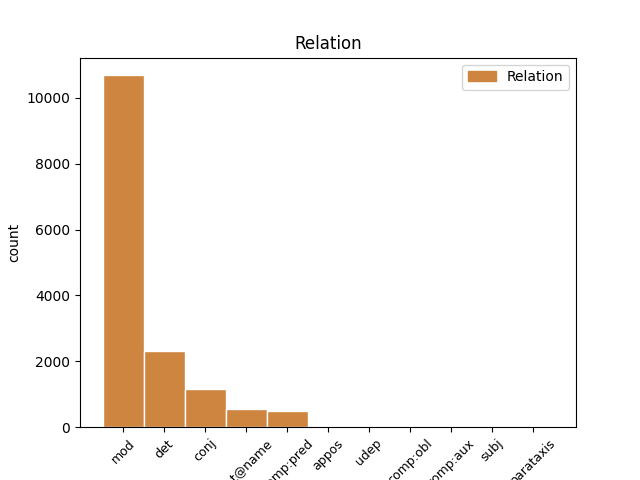
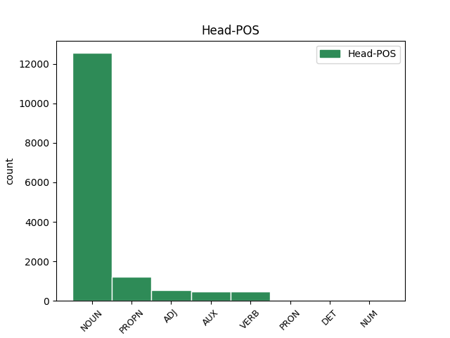
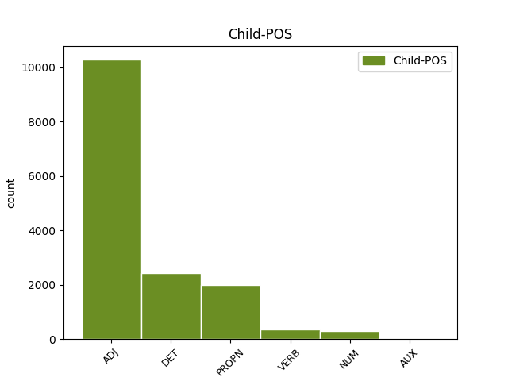

Distribution of features within this leaf



Agreement Rules sorted by frequency.
- When the dependent token is the modifer(mod) of the head token, and the dependent token is ADJ.
1 KOČEVJE _ _ _ _ 0 _ _ _
2 Iz _ _ _ _ 0 _ _ _
3 Kočevja _ _ _ _ 0 _ _ _
4 proti _ _ _ _ 0 _ _ _
5 Ljubljani _ _ _ _ 0 _ _ _
6 v _ _ _ _ 0 _ _ _
7 prihodnje _ _ _ _ 0 _ _ _
8 ne _ _ _ _ 0 _ _ _
9 bodo _ _ _ _ 0 _ _ _
10 vozili _ _ _ _ 0 _ _ _
11 zgolj _ _ _ _ 0 _ _ _
12 les _ _ _ _ 0 _ _ _
13 , _ _ _ _ 0 _ _ _
14 neprecenljivo _ _ _ _ 0 _ _ _
15 bogastvo _ _ _ _ 0 _ _ _
16 poraščene _ _ _ _ 0 _ _ _
17 pokrajine _ _ _ _ 0 _ _ _
18 tik _ _ _ _ 0 _ _ _
19 ob _ _ _ _ 0 _ _ _
20 hrvaški _ _ _ _ 0 _ _ _
21 meji _ _ _ _ 0 _ _ _
22 , _ _ _ _ 0 _ _ _
23 gneča _ _ _ _ 0 _ _ _
24 na _ _ _ _ 0 _ _ _
25 cesti _ _ _ _ 0 _ _ _
26 bo _ _ _ _ 0 _ _ _
27 tudi _ _ _ _ 0 _ _ _
28 zaradi _ _ _ _ 0 _ _ _
29 povečane _ _ _ _ 0 _ _ _
30 zmogljivosti _ _ _ _ 0 _ _ _
31 pri _ _ _ _ 0 _ _ _
32 proizvodnji _ _ _ _ 0 _ _ _
33 najbolj _ _ _ _ 0 _ _ _
34 znanih _ _ _ _ 0 _ _ _
35 slovenskih slovenski ADJ Agpmpg Case=Gen|Degree=Pos|Gender=Masc|Number=Plur 36 mod _ Dep=36|Rel=Atr
36 sirov sir NOUN Ncmpg Case=Gen|Gender=Masc|Number=Plur 0 _ _ _
37 . _ _ _ _ 0 _ _ _
1 Zdaj _ _ _ _ 0 _ _ _
2 je _ _ _ _ 0 _ _ _
3 že _ _ _ _ 0 _ _ _
4 jasno _ _ _ _ 0 _ _ _
5 , _ _ _ _ 0 _ _ _
6 da _ _ _ _ 0 _ _ _
7 na _ _ _ _ 0 _ _ _
8 občinski _ _ _ _ 0 _ _ _
9 ravni _ _ _ _ 0 _ _ _
10 strankarska _ _ _ _ 0 _ _ _
11 ideologija _ _ _ _ 0 _ _ _
12 ne _ _ _ _ 0 _ _ _
13 igra _ _ _ _ 0 _ _ _
14 nobene noben DET Pz-fsg Case=Gen|Gender=Fem|Number=Sing|PronType=Neg 15 det _ Dep=15|Rel=Atr
15 vloge vloga NOUN Ncfsg Case=Gen|Gender=Fem|Number=Sing 0 _ _ _
16 več _ _ _ _ 0 _ _ _
17 . _ _ _ _ 0 _ _ _
1 DUBLIN _ _ _ _ 0 _ _ _
2 Irsko _ _ _ _ 0 _ _ _
3 predsedstvo _ _ _ _ 0 _ _ _
4 Evropske _ _ _ _ 0 _ _ _
5 unije _ _ _ _ 0 _ _ _
6 je _ _ _ _ 0 _ _ _
7 sporočilo _ _ _ _ 0 _ _ _
8 , _ _ _ _ 0 _ _ _
9 da _ _ _ _ 0 _ _ _
10 bo _ _ _ _ 0 _ _ _
11 evropska _ _ _ _ 0 _ _ _
12 povezava _ _ _ _ 0 _ _ _
13 za _ _ _ _ 0 _ _ _
14 generalnega _ _ _ _ 0 _ _ _
15 direktorja _ _ _ _ 0 _ _ _
16 Mednarodnega _ _ _ _ 0 _ _ _
17 denarnega _ _ _ _ 0 _ _ _
18 sklada _ _ _ _ 0 _ _ _
19 predlagala _ _ _ _ 0 _ _ _
20 nekdanjega _ _ _ _ 0 _ _ _
21 španskega _ _ _ _ 0 _ _ _
22 ministra minister NOUN Ncmsay Animacy=Anim|Case=Acc|Gender=Masc|Number=Sing 0 _ _ _
23 za _ _ _ _ 0 _ _ _
24 gospodarstvo _ _ _ _ 0 _ _ _
25 Rodriga Rodrigo PROPN Npmsay Animacy=Anim|Case=Acc|Gender=Masc|Number=Sing 22 mod _ Dep=22|Rel=Atr
26 Rata _ _ _ _ 0 _ _ _
27 . _ _ _ _ 0 _ _ _
1 DUBLIN _ _ _ _ 0 _ _ _
2 Irsko _ _ _ _ 0 _ _ _
3 predsedstvo _ _ _ _ 0 _ _ _
4 Evropske _ _ _ _ 0 _ _ _
5 unije _ _ _ _ 0 _ _ _
6 je _ _ _ _ 0 _ _ _
7 sporočilo _ _ _ _ 0 _ _ _
8 , _ _ _ _ 0 _ _ _
9 da _ _ _ _ 0 _ _ _
10 bo _ _ _ _ 0 _ _ _
11 evropska _ _ _ _ 0 _ _ _
12 povezava _ _ _ _ 0 _ _ _
13 za _ _ _ _ 0 _ _ _
14 generalnega _ _ _ _ 0 _ _ _
15 direktorja _ _ _ _ 0 _ _ _
16 Mednarodnega _ _ _ _ 0 _ _ _
17 denarnega _ _ _ _ 0 _ _ _
18 sklada _ _ _ _ 0 _ _ _
19 predlagala _ _ _ _ 0 _ _ _
20 nekdanjega _ _ _ _ 0 _ _ _
21 španskega _ _ _ _ 0 _ _ _
22 ministra _ _ _ _ 0 _ _ _
23 za _ _ _ _ 0 _ _ _
24 gospodarstvo _ _ _ _ 0 _ _ _
25 Rodriga Rodrigo PROPN Npmsay Animacy=Anim|Case=Acc|Gender=Masc|Number=Sing 0 _ _ _
26 Rata Rato PROPN Npmsay Animacy=Anim|Case=Acc|Gender=Masc|Number=Sing 25 flat@name _ Dep=25|Rel=Atr|SpaceAfter=No
27 . _ _ _ _ 0 _ _ _
1 Tu _ _ _ _ 0 _ _ _
2 prevladujejo _ _ _ _ 0 _ _ _
3 drugačni drugačen ADJ Agpmpn Case=Nom|Degree=Pos|Gender=Masc|Number=Plur 0 _ _ _
4 , _ _ _ _ 0 _ _ _
5 veliko _ _ _ _ 0 _ _ _
6 bolj _ _ _ _ 0 _ _ _
7 pristni pristen ADJ Agpmpn Case=Nom|Degree=Pos|Gender=Masc|Number=Plur 3 conj _ Dep=3|Rel=Coord
8 interesi _ _ _ _ 0 _ _ _
9 . _ _ _ _ 0 _ _ _
1 Program _ _ _ _ 0 _ _ _
2 cpio _ _ _ _ 0 _ _ _
3 obnovi _ _ _ _ 0 _ _ _
4 imenik _ _ _ _ 0 _ _ _
5 in _ _ _ _ 0 _ _ _
6 na _ _ _ _ 0 _ _ _
7 koncu _ _ _ _ 0 _ _ _
8 izpiše _ _ _ _ 0 _ _ _
9 število _ _ _ _ 0 _ _ _
10 512 _ _ _ _ 0 _ _ _
11 - _ _ _ _ 0 _ _ _
12 znakovnih _ _ _ _ 0 _ _ _
13 blokov _ _ _ _ 0 _ _ _
14 , _ _ _ _ 0 _ _ _
15 ki _ _ _ _ 0 _ _ _
16 so _ _ _ _ 0 _ _ _
17 bili biti AUX Va-p-pm Gender=Masc|Number=Plur|VerbForm=Part 0 _ _ _
18 zapisani zapisan ADJ Appmpn Case=Nom|Degree=Pos|Gender=Masc|Number=Plur|VerbForm=Part 17 comp:pred _ Dep=17|Rel=Atr
19 na _ _ _ _ 0 _ _ _
20 trdi _ _ _ _ 0 _ _ _
21 disk _ _ _ _ 0 _ _ _
22 . _ _ _ _ 0 _ _ _
1 S _ _ _ _ 0 _ _ _
2 prizadevanji _ _ _ _ 0 _ _ _
3 , _ _ _ _ 0 _ _ _
4 da _ _ _ _ 0 _ _ _
5 bi _ _ _ _ 0 _ _ _
6 vzpostavil vzpostaviti VERB Vmep-sm Aspect=Perf|Gender=Masc|Number=Sing|VerbForm=Part 0 _ _ _
7 in _ _ _ _ 0 _ _ _
8 ohranil ohraniti VERB Vmep-sm Aspect=Perf|Gender=Masc|Number=Sing|VerbForm=Part 6 conj _ Dep=0|Rel=Root
9 mrežo _ _ _ _ 0 _ _ _
10 alternativnih _ _ _ _ 0 _ _ _
11 kulturnih _ _ _ _ 0 _ _ _
12 mladinskih _ _ _ _ 0 _ _ _
13 centrov _ _ _ _ 0 _ _ _
14 po _ _ _ _ 0 _ _ _
15 vsej _ _ _ _ 0 _ _ _
16 Sloveniji _ _ _ _ 0 _ _ _
17 v _ _ _ _ 0 _ _ _
18 času _ _ _ _ 0 _ _ _
19 tranzicije _ _ _ _ 0 _ _ _
20 , _ _ _ _ 0 _ _ _
21 ki _ _ _ _ 0 _ _ _
22 je _ _ _ _ 0 _ _ _
23 še _ _ _ _ 0 _ _ _
24 zlasti _ _ _ _ 0 _ _ _
25 nenaklonjena _ _ _ _ 0 _ _ _
26 mladini _ _ _ _ 0 _ _ _
27 , _ _ _ _ 0 _ _ _
28 kulturi _ _ _ _ 0 _ _ _
29 in _ _ _ _ 0 _ _ _
30 manjšim _ _ _ _ 0 _ _ _
31 krajem _ _ _ _ 0 _ _ _
32 , _ _ _ _ 0 _ _ _
33 pomaga _ _ _ _ 0 _ _ _
34 pri _ _ _ _ 0 _ _ _
35 uveljavljanju _ _ _ _ 0 _ _ _
36 nekaterih _ _ _ _ 0 _ _ _
37 najbolj _ _ _ _ 0 _ _ _
38 dragocenih _ _ _ _ 0 _ _ _
39 značilnosti _ _ _ _ 0 _ _ _
40 tukajšnje _ _ _ _ 0 _ _ _
41 družbe _ _ _ _ 0 _ _ _
42 . _ _ _ _ 0 _ _ _
1 Biljard _ _ _ _ 0 _ _ _
2 je _ _ _ _ 0 _ _ _
3 potem _ _ _ _ 0 _ _ _
4 pri _ _ _ _ 0 _ _ _
5 nas _ _ _ _ 0 _ _ _
6 na _ _ _ _ 0 _ _ _
7 kratko _ _ _ _ 0 _ _ _
8 malo _ _ _ _ 0 _ _ _
9 zamrl _ _ _ _ 0 _ _ _
10 , _ _ _ _ 0 _ _ _
11 toda _ _ _ _ 0 _ _ _
12 po _ _ _ _ 0 _ _ _
13 dveh dva NUM Mlcndl Case=Loc|Gender=Neut|Number=Dual|NumForm=Word|NumType=Card 16 mod _ Dep=16|Rel=Atr|SpaceAfter=No
14 , _ _ _ _ 0 _ _ _
15 treh _ _ _ _ 0 _ _ _
16 letih leto NOUN Ncnpl Case=Loc|Gender=Neut|Number=Plur 0 _ _ _
17 je _ _ _ _ 0 _ _ _
18 znova _ _ _ _ 0 _ _ _
19 oživel _ _ _ _ 0 _ _ _
20 . _ _ _ _ 0 _ _ _
1 Za _ _ _ _ 0 _ _ _
2 izjemne _ _ _ _ 0 _ _ _
3 dolgoletne _ _ _ _ 0 _ _ _
4 zasluge _ _ _ _ 0 _ _ _
5 in _ _ _ _ 0 _ _ _
6 osebni _ _ _ _ 0 _ _ _
7 prispevek _ _ _ _ 0 _ _ _
8 v _ _ _ _ 0 _ _ _
9 slovenski _ _ _ _ 0 _ _ _
10 gledališki _ _ _ _ 0 _ _ _
11 kulturi _ _ _ _ 0 _ _ _
12 je _ _ _ _ 0 _ _ _
13 predsednik _ _ _ _ 0 _ _ _
14 Milan _ _ _ _ 0 _ _ _
15 Kučan _ _ _ _ 0 _ _ _
16 odlikoval _ _ _ _ 0 _ _ _
17 še _ _ _ _ 0 _ _ _
18 profesorje _ _ _ _ 0 _ _ _
19 AGRFT _ _ _ _ 0 _ _ _
20 Štefanijo _ _ _ _ 0 _ _ _
21 Drolc _ _ _ _ 0 _ _ _
22 , _ _ _ _ 0 _ _ _
23 Jožeta _ _ _ _ 0 _ _ _
24 Galeta _ _ _ _ 0 _ _ _
25 , _ _ _ _ 0 _ _ _
26 Mirana _ _ _ _ 0 _ _ _
27 Herzoga _ _ _ _ 0 _ _ _
28 , _ _ _ _ 0 _ _ _
29 Vido _ _ _ _ 0 _ _ _
30 Jan _ _ _ _ 0 _ _ _
31 Juvan _ _ _ _ 0 _ _ _
32 , _ _ _ _ 0 _ _ _
33 Mileta Mile PROPN Npmsay Animacy=Anim|Case=Acc|Gender=Masc|Number=Sing 0 _ _ _
34 Koruna _ _ _ _ 0 _ _ _
35 in _ _ _ _ 0 _ _ _
36 Pina Pino PROPN Npmsay Animacy=Anim|Case=Acc|Gender=Masc|Number=Sing 33 conj _ Dep=20|Rel=Coord
37 Mlakarja _ _ _ _ 0 _ _ _
38 . _ _ _ _ 0 _ _ _
1 Če _ _ _ _ 0 _ _ _
2 ima _ _ _ _ 0 _ _ _
3 denar _ _ _ _ 0 _ _ _
4 za _ _ _ _ 0 _ _ _
5 vse ves DET Pg-mpa Case=Acc|Gender=Masc|Number=Plur|PronType=Tot 6 mod _ Dep=6|Rel=Atr
6 druge drug ADJ Mlpmpa Case=Acc|Gender=Masc|Number=Plur 0 _ _ _
7 , _ _ _ _ 0 _ _ _
8 ga _ _ _ _ 0 _ _ _
9 mora _ _ _ _ 0 _ _ _
10 najti _ _ _ _ 0 _ _ _
11 tudi _ _ _ _ 0 _ _ _
12 za _ _ _ _ 0 _ _ _
13 nas _ _ _ _ 0 _ _ _
14 ! _ _ _ _ 0 _ _ _
1 Ne _ _ _ _ 0 _ _ _
2 vem _ _ _ _ 0 _ _ _
3 , _ _ _ _ 0 _ _ _
4 kdo kdo PRON Pq-msn Case=Nom|Gender=Masc|Number=Sing|PronType=Int 0 _ _ _
5 drug drug ADJ Mlpmsnn Case=Nom|Definite=Ind|Gender=Masc|Number=Sing 4 udep _ Dep=8|Rel=Sb
6 bi _ _ _ _ 0 _ _ _
7 me _ _ _ _ 0 _ _ _
8 zaposlil _ _ _ _ 0 _ _ _
9 . _ _ _ _ 0 _ _ _
1 Ko _ _ _ _ 0 _ _ _
2 je _ _ _ _ 0 _ _ _
3 pozdravila _ _ _ _ 0 _ _ _
4 svoja _ _ _ _ 0 _ _ _
5 soigralca soigralec NOUN Ncmda Case=Acc|Gender=Masc|Number=Dual 0 _ _ _
6 v _ _ _ _ 0 _ _ _
7 filmu _ _ _ _ 0 _ _ _
8 , _ _ _ _ 0 _ _ _
9 Johna John PROPN Npmsay Animacy=Anim|Case=Acc|Gender=Masc|Number=Sing 5 appos _ Dep=0|Rel=Root
10 Cusacka _ _ _ _ 0 _ _ _
11 in _ _ _ _ 0 _ _ _
12 Billyja _ _ _ _ 0 _ _ _
13 Crystala _ _ _ _ 0 _ _ _
14 , _ _ _ _ 0 _ _ _
15 je _ _ _ _ 0 _ _ _
16 objela _ _ _ _ 0 _ _ _
17 tudi _ _ _ _ 0 _ _ _
18 prelepo _ _ _ _ 0 _ _ _
19 Catherine _ _ _ _ 0 _ _ _
20 Zeta _ _ _ _ 0 _ _ _
21 - _ _ _ _ 0 _ _ _
22 Jones _ _ _ _ 0 _ _ _
23 . _ _ _ _ 0 _ _ _
1 Njegova _ _ _ _ 0 _ _ _
2 slikarska _ _ _ _ 0 _ _ _
3 ustvarjalnost _ _ _ _ 0 _ _ _
4 je _ _ _ _ 0 _ _ _
5 v _ _ _ _ 0 _ _ _
6 primerjavi _ _ _ _ 0 _ _ _
7 s _ _ _ _ 0 _ _ _
8 kakim _ _ _ _ 0 _ _ _
9 Rafaelom _ _ _ _ 0 _ _ _
10 izrazito _ _ _ _ 0 _ _ _
11 borna _ _ _ _ 0 _ _ _
12 : _ _ _ _ 0 _ _ _
13 zapustil _ _ _ _ 0 _ _ _
14 je _ _ _ _ 0 _ _ _
15 samo _ _ _ _ 0 _ _ _
16 kakih _ _ _ _ 0 _ _ _
17 petnajst _ _ _ _ 0 _ _ _
18 slik _ _ _ _ 0 _ _ _
19 od _ _ _ _ 0 _ _ _
20 tistih _ _ _ _ 0 _ _ _
21 tridesetih _ _ _ _ 0 _ _ _
22 , _ _ _ _ 0 _ _ _
23 ki _ _ _ _ 0 _ _ _
24 jih _ _ _ _ 0 _ _ _
25 je _ _ _ _ 0 _ _ _
26 bil biti AUX Va-p-sm Gender=Masc|Number=Sing|VerbForm=Part 0 _ _ _
27 v _ _ _ _ 0 _ _ _
28 tem _ _ _ _ 0 _ _ _
29 obdobju _ _ _ _ 0 _ _ _
30 ustvaril ustvariti VERB Vmep-sm Aspect=Perf|Gender=Masc|Number=Sing|VerbForm=Part 26 comp:aux _ Dep=21|Rel=Atr
31 ali _ _ _ _ 0 _ _ _
32 zastavil _ _ _ _ 0 _ _ _
33 . _ _ _ _ 0 _ _ _
1 Čehov Čeh PROPN Npmpg Case=Gen|Gender=Masc|Number=Plur 4 comp:obl _ Dep=4|Rel=Obj
2 niso _ _ _ _ 0 _ _ _
3 nič _ _ _ _ 0 _ _ _
4 vprašali vprašati VERB Vmep-pm Aspect=Perf|Gender=Masc|Number=Plur|VerbForm=Part 0 _ _ _
5 . _ _ _ _ 0 _ _ _
1 Biljard _ _ _ _ 0 _ _ _
2 je _ _ _ _ 0 _ _ _
3 potem _ _ _ _ 0 _ _ _
4 pri _ _ _ _ 0 _ _ _
5 nas _ _ _ _ 0 _ _ _
6 na _ _ _ _ 0 _ _ _
7 kratko _ _ _ _ 0 _ _ _
8 malo _ _ _ _ 0 _ _ _
9 zamrl _ _ _ _ 0 _ _ _
10 , _ _ _ _ 0 _ _ _
11 toda _ _ _ _ 0 _ _ _
12 po _ _ _ _ 0 _ _ _
13 dveh dva NUM Mlcndl Case=Loc|Gender=Neut|Number=Dual|NumForm=Word|NumType=Card 0 _ _ _
14 , _ _ _ _ 0 _ _ _
15 treh trije NUM Mlcnpl Case=Loc|Gender=Neut|Number=Plur|NumForm=Word|NumType=Card 13 conj _ Dep=13|Rel=Coord
16 letih _ _ _ _ 0 _ _ _
17 je _ _ _ _ 0 _ _ _
18 znova _ _ _ _ 0 _ _ _
19 oživel _ _ _ _ 0 _ _ _
20 . _ _ _ _ 0 _ _ _
1 Poškilil _ _ _ _ 0 _ _ _
2 sem _ _ _ _ 0 _ _ _
3 navzdol _ _ _ _ 0 _ _ _
4 po _ _ _ _ 0 _ _ _
5 svojem _ _ _ _ 0 _ _ _
6 nosu _ _ _ _ 0 _ _ _
7 in _ _ _ _ 0 _ _ _
8 tudi _ _ _ _ 0 _ _ _
9 ta _ _ _ _ 0 _ _ _
10 se _ _ _ _ 0 _ _ _
11 mi _ _ _ _ 0 _ _ _
12 je _ _ _ _ 0 _ _ _
13 zdel zdeti VERB Vmpp-sm Aspect=Imp|Gender=Masc|Number=Sing|VerbForm=Part 0 _ _ _
14 tak tak DET Pd-msn Case=Nom|Gender=Masc|Number=Sing|PronType=Dem 13 comp:pred _ Dep=13|Rel=Atr|SpaceAfter=No
15 , _ _ _ _ 0 _ _ _
16 kakor _ _ _ _ 0 _ _ _
17 sem _ _ _ _ 0 _ _ _
18 lahko _ _ _ _ 0 _ _ _
19 pričakoval _ _ _ _ 0 _ _ _
20 . _ _ _ _ 0 _ _ _
1 Očitni _ _ _ _ 0 _ _ _
2 argument _ _ _ _ 0 _ _ _
3 v _ _ _ _ 0 _ _ _
4 prid _ _ _ _ 0 _ _ _
5 tega _ _ _ _ 0 _ _ _
6 nasveta _ _ _ _ 0 _ _ _
7 je _ _ _ _ 0 _ _ _
8 obsodba _ _ _ _ 0 _ _ _
9 brezdelništva _ _ _ _ 0 _ _ _
10 in _ _ _ _ 0 _ _ _
11 etos _ _ _ _ 0 _ _ _
12 dela _ _ _ _ 0 _ _ _
13 , _ _ _ _ 0 _ _ _
14 kar kar PRON Pr-nsn Case=Nom|Gender=Neut|Number=Sing|PronType=Rel 0 _ _ _
15 vse ves DET Pg-nsn Case=Nom|Gender=Neut|Number=Sing|PronType=Tot 14 udep _ Dep=16|Rel=Sb
16 izhaja _ _ _ _ 0 _ _ _
17 iz _ _ _ _ 0 _ _ _
18 zapovedi _ _ _ _ 0 _ _ _
19 sv. _ _ _ _ 0 _ _ _
20 pisma _ _ _ _ 0 _ _ _
21 . _ _ _ _ 0 _ _ _
1 Koristno _ _ _ _ 0 _ _ _
2 je _ _ _ _ 0 _ _ _
3 , _ _ _ _ 0 _ _ _
4 če _ _ _ _ 0 _ _ _
5 pred _ _ _ _ 0 _ _ _
6 nakupom _ _ _ _ 0 _ _ _
7 vsaj _ _ _ _ 0 _ _ _
8 vemo _ _ _ _ 0 _ _ _
9 , _ _ _ _ 0 _ _ _
10 kaj _ _ _ _ 0 _ _ _
11 te _ _ _ _ 0 _ _ _
12 vrednosti _ _ _ _ 0 _ _ _
13 pomenijo _ _ _ _ 0 _ _ _
14 , _ _ _ _ 0 _ _ _
15 drugače _ _ _ _ 0 _ _ _
16 se _ _ _ _ 0 _ _ _
17 bo _ _ _ _ 0 _ _ _
18 hitro _ _ _ _ 0 _ _ _
19 zgodilo _ _ _ _ 0 _ _ _
20 , _ _ _ _ 0 _ _ _
21 da _ _ _ _ 0 _ _ _
22 bomo _ _ _ _ 0 _ _ _
23 računalnik računalnik NOUN Ncmsan Animacy=Inan|Case=Acc|Gender=Masc|Number=Sing 0 _ _ _
24 ali _ _ _ _ 0 _ _ _
25 katerega kateri DET Pq-msa Case=Acc|Gender=Masc|Number=Sing|PronType=Int 23 conj _ Dep=28|Rel=Atr
26 izmed _ _ _ _ 0 _ _ _
27 njegovih _ _ _ _ 0 _ _ _
28 delov _ _ _ _ 0 _ _ _
29 preplačali _ _ _ _ 0 _ _ _
30 . _ _ _ _ 0 _ _ _
1 Kljub _ _ _ _ 0 _ _ _
2 temu _ _ _ _ 0 _ _ _
3 je _ _ _ _ 0 _ _ _
4 njihov _ _ _ _ 0 _ _ _
5 menedžer _ _ _ _ 0 _ _ _
6 na _ _ _ _ 0 _ _ _
7 vprašanje _ _ _ _ 0 _ _ _
8 , _ _ _ _ 0 _ _ _
9 ali _ _ _ _ 0 _ _ _
10 obstaja _ _ _ _ 0 _ _ _
11 možnost _ _ _ _ 0 _ _ _
12 , _ _ _ _ 0 _ _ _
13 da _ _ _ _ 0 _ _ _
14 bi _ _ _ _ 0 _ _ _
15 čeden _ _ _ _ 0 _ _ _
16 Slovenec _ _ _ _ 0 _ _ _
17 lahko _ _ _ _ 0 _ _ _
18 postal postati VERB Vmep-sm Aspect=Perf|Gender=Masc|Number=Sing|VerbForm=Part 0 _ _ _
19 Chippendale Chippendale PROPN Npmsn Case=Nom|Gender=Masc|Number=Sing 18 comp:pred _ Dep=18|Rel=Obj|SpaceAfter=No
20 , _ _ _ _ 0 _ _ _
21 odgovoril _ _ _ _ 0 _ _ _
22 , _ _ _ _ 0 _ _ _
23 da _ _ _ _ 0 _ _ _
24 možnosti _ _ _ _ 0 _ _ _
25 vedno _ _ _ _ 0 _ _ _
26 obstajajo _ _ _ _ 0 _ _ _
27 . _ _ _ _ 0 _ _ _
28 . _ _ _ _ 0 _ _ _
29 . _ _ _ _ 0 _ _ _
1 V _ _ _ _ 0 _ _ _
2 svojem _ _ _ _ 0 _ _ _
3 žepnem _ _ _ _ 0 _ _ _
4 notesu _ _ _ _ 0 _ _ _
5 je _ _ _ _ 0 _ _ _
6 zapisal _ _ _ _ 0 _ _ _
7 misel _ _ _ _ 0 _ _ _
8 dneva _ _ _ _ 0 _ _ _
9 , _ _ _ _ 0 _ _ _
10 ki _ _ _ _ 0 _ _ _
11 jo _ _ _ _ 0 _ _ _
12 je _ _ _ _ 0 _ _ _
13 povzel _ _ _ _ 0 _ _ _
14 iz _ _ _ _ 0 _ _ _
15 vstopne _ _ _ _ 0 _ _ _
16 pesmi _ _ _ _ 0 _ _ _
17 , _ _ _ _ 0 _ _ _
18 berila _ _ _ _ 0 _ _ _
19 ali _ _ _ _ 0 _ _ _
20 evangelija _ _ _ _ 0 _ _ _
21 in _ _ _ _ 0 _ _ _
22 jo _ _ _ _ 0 _ _ _
23 včasih _ _ _ _ 0 _ _ _
24 po _ _ _ _ 0 _ _ _
25 telefonu _ _ _ _ 0 _ _ _
26 sporočil sporočiti VERB Vmep-sm Aspect=Perf|Gender=Masc|Number=Sing|VerbForm=Part 0 _ _ _
27 svojim _ _ _ _ 0 _ _ _
28 najbližjim blizek ADJ Agsmpd Case=Dat|Degree=Sup|Gender=Masc|Number=Plur 26 comp:obl _ Dep=26|Rel=Obj|SpaceAfter=No
29 . _ _ _ _ 0 _ _ _
1 Tudi _ _ _ _ 0 _ _ _
2 temu ta DET Pd-msd Case=Dat|Gender=Masc|Number=Sing|PronType=Dem 4 comp:obl _ Dep=4|Rel=Obj
3 je _ _ _ _ 0 _ _ _
4 dal dati VERB Vmep-sm Aspect=Perf|Gender=Masc|Number=Sing|VerbForm=Part 0 _ _ _
5 de _ _ _ _ 0 _ _ _
6 Terzi _ _ _ _ 0 _ _ _
7 na _ _ _ _ 0 _ _ _
8 izbiro _ _ _ _ 0 _ _ _
9 , _ _ _ _ 0 _ _ _
10 ali _ _ _ _ 0 _ _ _
11 bo _ _ _ _ 0 _ _ _
12 dve _ _ _ _ 0 _ _ _
13 leti _ _ _ _ 0 _ _ _
14 plačeval _ _ _ _ 0 _ _ _
15 vojaka _ _ _ _ 0 _ _ _
16 , _ _ _ _ 0 _ _ _
17 ki _ _ _ _ 0 _ _ _
18 bo _ _ _ _ 0 _ _ _
19 stražil _ _ _ _ 0 _ _ _
20 pazinski _ _ _ _ 0 _ _ _
21 grad _ _ _ _ 0 _ _ _
22 , _ _ _ _ 0 _ _ _
23 ali _ _ _ _ 0 _ _ _
24 pa _ _ _ _ 0 _ _ _
25 bo _ _ _ _ 0 _ _ _
26 šel _ _ _ _ 0 _ _ _
27 za _ _ _ _ 0 _ _ _
28 štiri _ _ _ _ 0 _ _ _
29 leta _ _ _ _ 0 _ _ _
30 v _ _ _ _ 0 _ _ _
31 ječo _ _ _ _ 0 _ _ _
32 . _ _ _ _ 0 _ _ _
1 ( _ _ _ _ 0 _ _ _
2 Valjavec Valjavec PROPN Npmsn Case=Nom|Gender=Masc|Number=Sing 3 subj _ Dep=3|Rel=Sb
3 dobil dobiti VERB Vmep-sm Aspect=Perf|Gender=Masc|Number=Sing|VerbForm=Part 0 _ _ _
4 " _ _ _ _ 0 _ _ _
5 kontro _ _ _ _ 0 _ _ _
6 " _ _ _ _ 0 _ _ _
1 Stefano _ _ _ _ 0 _ _ _
2 Lusa Lusa PROPN Npmsn Case=Nom|Gender=Masc|Number=Sing 0 _ _ _
3 , _ _ _ _ 0 _ _ _
4 eden eden NUM Mlpmsn Case=Nom|Gender=Masc|Number=Sing|NumForm=Word|NumType=Card 2 appos _ Dep=6|Rel=Atr
5 od _ _ _ _ 0 _ _ _
6 analitikov _ _ _ _ 0 _ _ _
7 demografskega _ _ _ _ 0 _ _ _
8 gibanja _ _ _ _ 0 _ _ _
9 v _ _ _ _ 0 _ _ _
10 slovenski _ _ _ _ 0 _ _ _
11 Istri _ _ _ _ 0 _ _ _
12 , _ _ _ _ 0 _ _ _
13 je _ _ _ _ 0 _ _ _
14 zapisal _ _ _ _ 0 _ _ _
15 celo _ _ _ _ 0 _ _ _
16 , _ _ _ _ 0 _ _ _
17 da _ _ _ _ 0 _ _ _
18 je _ _ _ _ 0 _ _ _
19 Italijanov _ _ _ _ 0 _ _ _
20 najbrž _ _ _ _ 0 _ _ _
21 zato _ _ _ _ 0 _ _ _
22 manj _ _ _ _ 0 _ _ _
23 , _ _ _ _ 0 _ _ _
24 ker _ _ _ _ 0 _ _ _
25 se _ _ _ _ 0 _ _ _
26 nikakor _ _ _ _ 0 _ _ _
27 ne _ _ _ _ 0 _ _ _
28 izplača _ _ _ _ 0 _ _ _
29 biti _ _ _ _ 0 _ _ _
30 Italijan _ _ _ _ 0 _ _ _
31 . _ _ _ _ 0 _ _ _
1 Kakšen kakšen DET Pq-msn Case=Nom|Gender=Masc|Number=Sing|PronType=Int 2 subj _ Dep=2|Rel=Conj
2 november november NOUN Ncmsn Case=Nom|Gender=Masc|Number=Sing 0 _ _ _
3 je _ _ _ _ 0 _ _ _
4 pred _ _ _ _ 0 _ _ _
5 nami _ _ _ _ 0 _ _ _
6 , _ _ _ _ 0 _ _ _
7 lahko _ _ _ _ 0 _ _ _
8 samo _ _ _ _ 0 _ _ _
9 ugibamo _ _ _ _ 0 _ _ _
10 . _ _ _ _ 0 _ _ _
1 Zmajarja _ _ _ _ 0 _ _ _
2 našli najti VERB Vmep-pm Aspect=Perf|Gender=Masc|Number=Plur|VerbForm=Part 0 _ _ _
3 mrtva _ _ _ _ 0 _ _ _
4 med _ _ _ _ 0 _ _ _
5 vasema _ _ _ _ 0 _ _ _
6 Rova _ _ _ _ 0 _ _ _
7 in _ _ _ _ 0 _ _ _
8 Kolovec _ _ _ _ 0 _ _ _
9 - _ _ _ _ 0 _ _ _
10 Mladoletnik _ _ _ _ 0 _ _ _
11 zbil zbiti VERB Vmep-sm Aspect=Perf|Gender=Masc|Number=Sing|VerbForm=Part 2 parataxis _ Dep=0|Rel=Root
12 petletno _ _ _ _ 0 _ _ _
13 deklico _ _ _ _ 0 _ _ _
1 Policisti _ _ _ _ 0 _ _ _
2 so _ _ _ _ 0 _ _ _
3 zoper _ _ _ _ 0 _ _ _
4 vse _ _ _ _ 0 _ _ _
5 omenjene _ _ _ _ 0 _ _ _
6 osumljene _ _ _ _ 0 _ _ _
7 odredili _ _ _ _ 0 _ _ _
8 policijsko _ _ _ _ 0 _ _ _
9 pridržanje _ _ _ _ 0 _ _ _
10 , _ _ _ _ 0 _ _ _
11 pri _ _ _ _ 0 _ _ _
12 njih _ _ _ _ 0 _ _ _
13 opravili _ _ _ _ 0 _ _ _
14 hišne _ _ _ _ 0 _ _ _
15 preiskave _ _ _ _ 0 _ _ _
16 in _ _ _ _ 0 _ _ _
17 trem trije NUM Mlcmpd Case=Dat|Gender=Masc|Number=Plur|NumForm=Word|NumType=Card 18 comp:obl _ Dep=18|Rel=Obj
18 zasegli zaseči VERB Vmep-pm Aspect=Perf|Gender=Masc|Number=Plur|VerbForm=Part 0 _ _ _
19 računalniško _ _ _ _ 0 _ _ _
20 opremo _ _ _ _ 0 _ _ _
21 . _ _ _ _ 0 _ _ _
1 Ključar _ _ _ _ 0 _ _ _
2 Viktor _ _ _ _ 0 _ _ _
3 Papler _ _ _ _ 0 _ _ _
4 , _ _ _ _ 0 _ _ _
5 ki _ _ _ _ 0 _ _ _
6 mu _ _ _ _ 0 _ _ _
7 je _ _ _ _ 0 _ _ _
8 prvi _ _ _ _ 0 _ _ _
9 priskočil priskočiti VERB Vmep-sm Aspect=Perf|Gender=Masc|Number=Sing|VerbForm=Part 0 _ _ _
10 na _ _ _ _ 0 _ _ _
11 pomoč _ _ _ _ 0 _ _ _
12 in _ _ _ _ 0 _ _ _
13 bil biti AUX Va-p-sm Gender=Masc|Number=Sing|VerbForm=Part 9 conj _ Dep=0|Rel=Root
14 nato _ _ _ _ 0 _ _ _
15 tudi _ _ _ _ 0 _ _ _
16 sam _ _ _ _ 0 _ _ _
17 ogrožen _ _ _ _ 0 _ _ _
18 , _ _ _ _ 0 _ _ _
19 je _ _ _ _ 0 _ _ _
20 povedal _ _ _ _ 0 _ _ _
21 , _ _ _ _ 0 _ _ _
22 kako _ _ _ _ 0 _ _ _
23 sta _ _ _ _ 0 _ _ _
24 tja _ _ _ _ 0 _ _ _
25 prihitela _ _ _ _ 0 _ _ _
26 še _ _ _ _ 0 _ _ _
27 dva _ _ _ _ 0 _ _ _
28 vaščana _ _ _ _ 0 _ _ _
29 . _ _ _ _ 0 _ _ _
1 Ključar _ _ _ _ 0 _ _ _
2 Viktor _ _ _ _ 0 _ _ _
3 Papler _ _ _ _ 0 _ _ _
4 , _ _ _ _ 0 _ _ _
5 ki _ _ _ _ 0 _ _ _
6 mu _ _ _ _ 0 _ _ _
7 je _ _ _ _ 0 _ _ _
8 prvi _ _ _ _ 0 _ _ _
9 priskočil _ _ _ _ 0 _ _ _
10 na _ _ _ _ 0 _ _ _
11 pomoč _ _ _ _ 0 _ _ _
12 in _ _ _ _ 0 _ _ _
13 bil biti AUX Va-p-sm Gender=Masc|Number=Sing|VerbForm=Part 0 _ _ _
14 nato _ _ _ _ 0 _ _ _
15 tudi _ _ _ _ 0 _ _ _
16 sam sam ADJ Agpmsnn Case=Nom|Definite=Ind|Degree=Pos|Gender=Masc|Number=Sing 13 subj _ Dep=13|Rel=Sb
17 ogrožen _ _ _ _ 0 _ _ _
18 , _ _ _ _ 0 _ _ _
19 je _ _ _ _ 0 _ _ _
20 povedal _ _ _ _ 0 _ _ _
21 , _ _ _ _ 0 _ _ _
22 kako _ _ _ _ 0 _ _ _
23 sta _ _ _ _ 0 _ _ _
24 tja _ _ _ _ 0 _ _ _
25 prihitela _ _ _ _ 0 _ _ _
26 še _ _ _ _ 0 _ _ _
27 dva _ _ _ _ 0 _ _ _
28 vaščana _ _ _ _ 0 _ _ _
29 . _ _ _ _ 0 _ _ _
1 Matej _ _ _ _ 0 _ _ _
2 naj _ _ _ _ 0 _ _ _
3 bi _ _ _ _ 0 _ _ _
4 bil _ _ _ _ 0 _ _ _
5 enega en NUM Mlpmsa Case=Acc|Gender=Masc|Number=Sing|NumForm=Word|NumType=Card 8 udep _ Dep=7|Rel=Atr
6 od _ _ _ _ 0 _ _ _
7 policistov _ _ _ _ 0 _ _ _
8 udaril udariti VERB Vmep-sm Aspect=Perf|Gender=Masc|Number=Sing|VerbForm=Part 0 _ _ _
9 v _ _ _ _ 0 _ _ _
10 obraz _ _ _ _ 0 _ _ _
11 . _ _ _ _ 0 _ _ _
1 Postala _ _ _ _ 0 _ _ _
2 je _ _ _ _ 0 _ _ _
3 kraljica _ _ _ _ 0 _ _ _
4 mračnega _ _ _ _ 0 _ _ _
5 Hadovega _ _ _ _ 0 _ _ _
6 kraljestva _ _ _ _ 0 _ _ _
7 in _ _ _ _ 0 _ _ _
8 se _ _ _ _ 0 _ _ _
9 poslej _ _ _ _ 0 _ _ _
10 imenovala imenovati VERB Vmbp-sf Gender=Fem|Number=Sing|VerbForm=Part 0 _ _ _
11 Persefona Persefona PROPN Npfsn Case=Nom|Gender=Fem|Number=Sing 10 udep _ Dep=10|Rel=AdvM|SpaceAfter=No
12 . _ _ _ _ 0 _ _ _
1 Eden eden NUM Mlpmsn Case=Nom|Gender=Masc|Number=Sing|NumForm=Word|NumType=Card 8 comp:pred _ Dep=5|Rel=Atr
2 od _ _ _ _ 0 _ _ _
3 njegovih _ _ _ _ 0 _ _ _
4 največjih _ _ _ _ 0 _ _ _
5 grehov _ _ _ _ 0 _ _ _
6 naj _ _ _ _ 0 _ _ _
7 bi _ _ _ _ 0 _ _ _
8 bil biti AUX Va-p-sm Gender=Masc|Number=Sing|VerbForm=Part 0 _ _ _
9 ta _ _ _ _ 0 _ _ _
10 , _ _ _ _ 0 _ _ _
11 da _ _ _ _ 0 _ _ _
12 je _ _ _ _ 0 _ _ _
13 svojo _ _ _ _ 0 _ _ _
14 ženo _ _ _ _ 0 _ _ _
15 varal _ _ _ _ 0 _ _ _
16 z _ _ _ _ 0 _ _ _
17 neko _ _ _ _ 0 _ _ _
18 pevko _ _ _ _ 0 _ _ _
19 . _ _ _ _ 0 _ _ _
Disagree Examples:
1 Naprava naprava NOUN Ncfsn Case=Nom|Gender=Fem|Number=Sing 0 _ _ _
2 BICOM BICOM PROPN Npmsn Case=Nom|Gender=Masc|Number=Sing 1 mod _ Dep=1|Rel=Atr
3 je _ _ _ _ 0 _ _ _
4 torej _ _ _ _ 0 _ _ _
5 nekakšna _ _ _ _ 0 _ _ _
6 zbirka _ _ _ _ 0 _ _ _
7 impulzov _ _ _ _ 0 _ _ _
8 , _ _ _ _ 0 _ _ _
9 oblikovanih _ _ _ _ 0 _ _ _
10 v _ _ _ _ 0 _ _ _
11 zdravilne _ _ _ _ 0 _ _ _
12 programe _ _ _ _ 0 _ _ _
13 , _ _ _ _ 0 _ _ _
14 ki _ _ _ _ 0 _ _ _
15 pospešujejo _ _ _ _ 0 _ _ _
16 zdravljenje _ _ _ _ 0 _ _ _
17 in _ _ _ _ 0 _ _ _
18 normalizacijo _ _ _ _ 0 _ _ _
19 presnovnih _ _ _ _ 0 _ _ _
20 procesov _ _ _ _ 0 _ _ _
21 v _ _ _ _ 0 _ _ _
22 telesu _ _ _ _ 0 _ _ _
23 , _ _ _ _ 0 _ _ _
24 toda _ _ _ _ 0 _ _ _
25 na _ _ _ _ 0 _ _ _
26 koncu _ _ _ _ 0 _ _ _
27 je _ _ _ _ 0 _ _ _
28 vseeno _ _ _ _ 0 _ _ _
29 od _ _ _ _ 0 _ _ _
30 človeka _ _ _ _ 0 _ _ _
31 , _ _ _ _ 0 _ _ _
32 ki _ _ _ _ 0 _ _ _
33 upravlja _ _ _ _ 0 _ _ _
34 z _ _ _ _ 0 _ _ _
35 aparatom _ _ _ _ 0 _ _ _
36 , _ _ _ _ 0 _ _ _
37 in _ _ _ _ 0 _ _ _
38 od _ _ _ _ 0 _ _ _
39 njegovih _ _ _ _ 0 _ _ _
40 izkušenj _ _ _ _ 0 _ _ _
41 odvisno _ _ _ _ 0 _ _ _
42 , _ _ _ _ 0 _ _ _
43 ali _ _ _ _ 0 _ _ _
44 bo _ _ _ _ 0 _ _ _
45 pravilno _ _ _ _ 0 _ _ _
46 postavil _ _ _ _ 0 _ _ _
47 diagnozo _ _ _ _ 0 _ _ _
48 in _ _ _ _ 0 _ _ _
49 izbral _ _ _ _ 0 _ _ _
50 pravi _ _ _ _ 0 _ _ _
51 program _ _ _ _ 0 _ _ _
52 za _ _ _ _ 0 _ _ _
53 bolnika _ _ _ _ 0 _ _ _
54 . _ _ _ _ 0 _ _ _
1 Znamenita _ _ _ _ 0 _ _ _
2 konjeniška _ _ _ _ 0 _ _ _
3 dirka dirka NOUN Ncfsn Case=Nom|Gender=Fem|Number=Sing 0 _ _ _
4 Aintree Aintree PROPN Npmsn Case=Nom|Gender=Masc|Number=Sing 3 mod _ Dep=3|Rel=Atr
5 2005 _ _ _ _ 0 _ _ _
6 v _ _ _ _ 0 _ _ _
7 bližini _ _ _ _ 0 _ _ _
8 Liverpoola _ _ _ _ 0 _ _ _
9 je _ _ _ _ 0 _ _ _
10 tudi _ _ _ _ 0 _ _ _
11 letos _ _ _ _ 0 _ _ _
12 postregla _ _ _ _ 0 _ _ _
13 z _ _ _ _ 0 _ _ _
14 nekaterimi _ _ _ _ 0 _ _ _
15 nepredvidljivimi _ _ _ _ 0 _ _ _
16 naključji _ _ _ _ 0 _ _ _
17 . _ _ _ _ 0 _ _ _
1 Znamenita _ _ _ _ 0 _ _ _
2 konjeniška _ _ _ _ 0 _ _ _
3 dirka _ _ _ _ 0 _ _ _
4 Aintree _ _ _ _ 0 _ _ _
5 2005 _ _ _ _ 0 _ _ _
6 v _ _ _ _ 0 _ _ _
7 bližini bližina NOUN Ncfsl Case=Loc|Gender=Fem|Number=Sing 0 _ _ _
8 Liverpoola Liverpool PROPN Npmsg Case=Gen|Gender=Masc|Number=Sing 7 mod _ Dep=7|Rel=Atr
9 je _ _ _ _ 0 _ _ _
10 tudi _ _ _ _ 0 _ _ _
11 letos _ _ _ _ 0 _ _ _
12 postregla _ _ _ _ 0 _ _ _
13 z _ _ _ _ 0 _ _ _
14 nekaterimi _ _ _ _ 0 _ _ _
15 nepredvidljivimi _ _ _ _ 0 _ _ _
16 naključji _ _ _ _ 0 _ _ _
17 . _ _ _ _ 0 _ _ _
1 Dan _ _ _ _ 0 _ _ _
2 pogreba _ _ _ _ 0 _ _ _
3 se _ _ _ _ 0 _ _ _
4 je _ _ _ _ 0 _ _ _
5 križal _ _ _ _ 0 _ _ _
6 tudi _ _ _ _ 0 _ _ _
7 z _ _ _ _ 0 _ _ _
8 načrti _ _ _ _ 0 _ _ _
9 angleške _ _ _ _ 0 _ _ _
10 kraljeve _ _ _ _ 0 _ _ _
11 družine _ _ _ _ 0 _ _ _
12 , _ _ _ _ 0 _ _ _
13 ki _ _ _ _ 0 _ _ _
14 je _ _ _ _ 0 _ _ _
15 načrtovala _ _ _ _ 0 _ _ _
16 poroko _ _ _ _ 0 _ _ _
17 princa princ NOUN Ncmsg Case=Gen|Gender=Masc|Number=Sing 0 _ _ _
18 Charlesa _ _ _ _ 0 _ _ _
19 in _ _ _ _ 0 _ _ _
20 Camille Camilla PROPN Npfsg Case=Gen|Gender=Fem|Number=Sing 17 conj _ Dep=17|Rel=Coord
21 Parker _ _ _ _ 0 _ _ _
22 Bowles _ _ _ _ 0 _ _ _
23 . _ _ _ _ 0 _ _ _
1 Nastale _ _ _ _ 0 _ _ _
2 spremembe _ _ _ _ 0 _ _ _
3 so _ _ _ _ 0 _ _ _
4 povzročile _ _ _ _ 0 _ _ _
5 nevšečnosti _ _ _ _ 0 _ _ _
6 na _ _ _ _ 0 _ _ _
7 televiziji televizija NOUN Ncfsl Case=Loc|Gender=Fem|Number=Sing 0 _ _ _
8 BBC BBC PROPN Npmsn Case=Nom|Gender=Masc|Number=Sing 7 mod _ Dep=7|Rel=Atr|SpaceAfter=No
9 , _ _ _ _ 0 _ _ _
10 kjer _ _ _ _ 0 _ _ _
11 so _ _ _ _ 0 _ _ _
12 le _ _ _ _ 0 _ _ _
13 s _ _ _ _ 0 _ _ _
14 težavo _ _ _ _ 0 _ _ _
15 uskladili _ _ _ _ 0 _ _ _
16 prenos _ _ _ _ 0 _ _ _
17 vseh _ _ _ _ 0 _ _ _
18 pomembnih _ _ _ _ 0 _ _ _
19 dogodkov _ _ _ _ 0 _ _ _
20 . _ _ _ _ 0 _ _ _